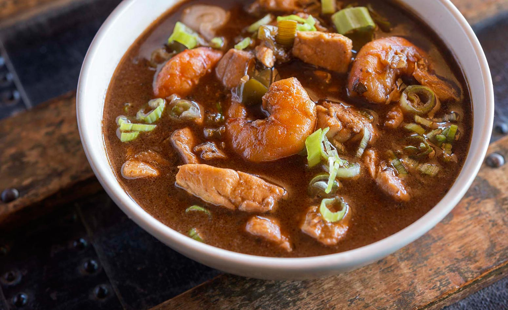

Cajun Gumbo

Description
Of all the dishes in the realm of Louisiana cooking,
gumbo is the most famous and, very likely, the most popular.
Gumbo crosses all class barriers, appearing on the tables of the poor
as well as the wealthy. Although ingredients might vary greatly from one
cook to the next, and from one part of the state to another, a steaming bowl
of fragrant gumbo is one of life’s cherished pleasures, as emblematic
of Louisiana as chili is of Texas.
Gumbo is often cited as an example of the melting-pot nature of Louisiana
cooking, but trying to sort out the origins and evolution of the dish is
highly speculative. The name derives from a West African word for okra,
suggesting that gumbo was originally made with okra. The use of filé
(dried and ground sassafras leaves) was a contribution of the Choctaws and,
possibly, other local tribes. Roux has its origin in French cuisine,
although the roux used in gumbos is much darker than its Gallic cousins.
Ingredients
- 1 lb shrimp, peeled
- 1 lb lumb crabmeat
- 2 dozen oysters, shucked, reserve liquid
- 3 quarts shellfish stock
- 1 cup vegetable oil
- 1 cup flour
- 2 cups chopped celery
- 1 cup chopped bell pepper
- 1⁄4 cup diced garlic
- 1⁄2 lb sliced andouille sausage
- 1 clawcrabmeat
- 2 cups sliced green onions
- 1⁄2 cup chopped parsley
- salt
- cayenne pepper
- louisiana gold pepper sauce
Steps
- In a 7-quart cast iron dutch oven, heat oil over medium-high heat.
- Sprinkle in flour and, using a wire whisk, stir constantly until brown roux
is achieved. Do not allow roux to scorch. Should black specks appear in roux,
discard and begin again.
- Once roux is golden brown, add onions, celery, bell pepper and garlic. Sauté approximately 3-5 minutes or until vegetables are wilted.
- Add andouille, blend well into vegetable mixture and sauté an additional 2-3 minutes.
- Add claw crabmeat and stir into roux. This will begin to add seafood flavor to the mixture.
- Slowly add hot shellfish stock, one ladle at a time, stirring constantly until all is incorporated.
- Bring to a low boil, reduce to simmer and cook approximately 30 minutes. Add additional stock if necessary to retain volume.
- Add green onions and parsley.
- Season to taste using salt, pepper and Louisiana Gold.
- Fold shrimp, lump crab meat, oysters and reserved oyster liquid into soup
- Return to a low boil and cook approximately 5 minutes.
- Adjust seasonings and serve over cooked rice.